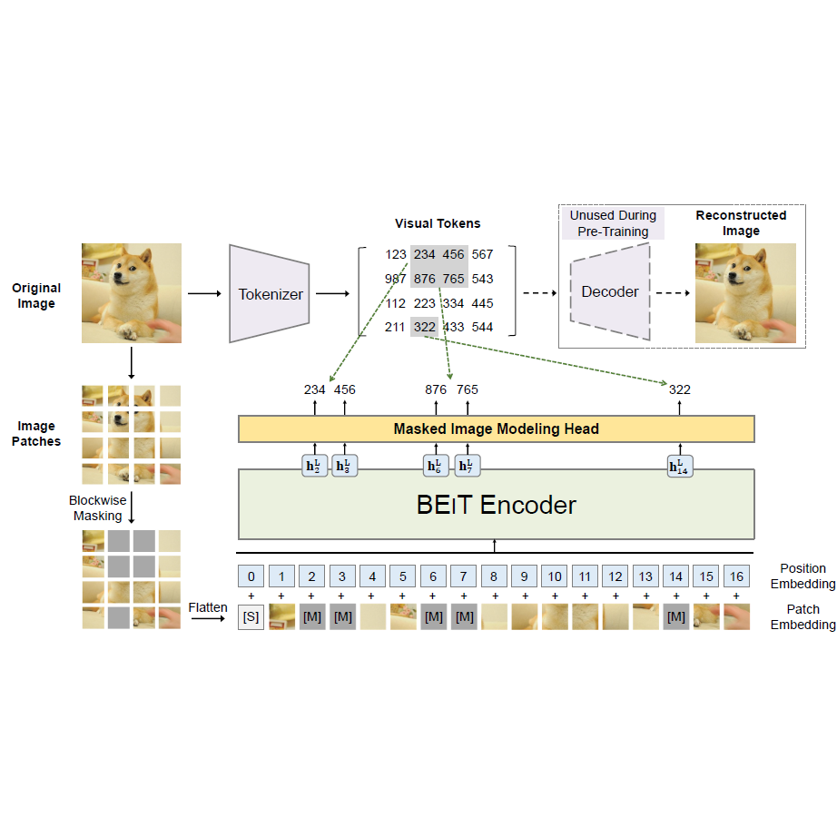
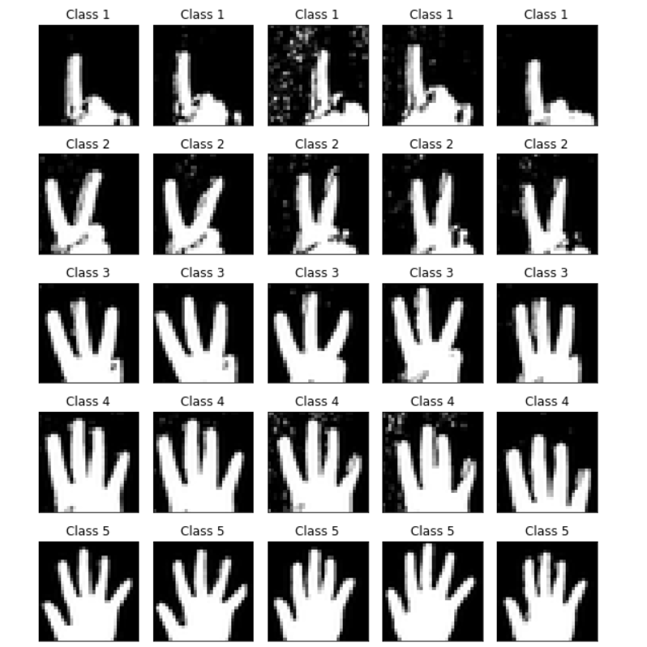
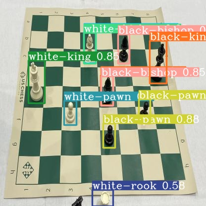
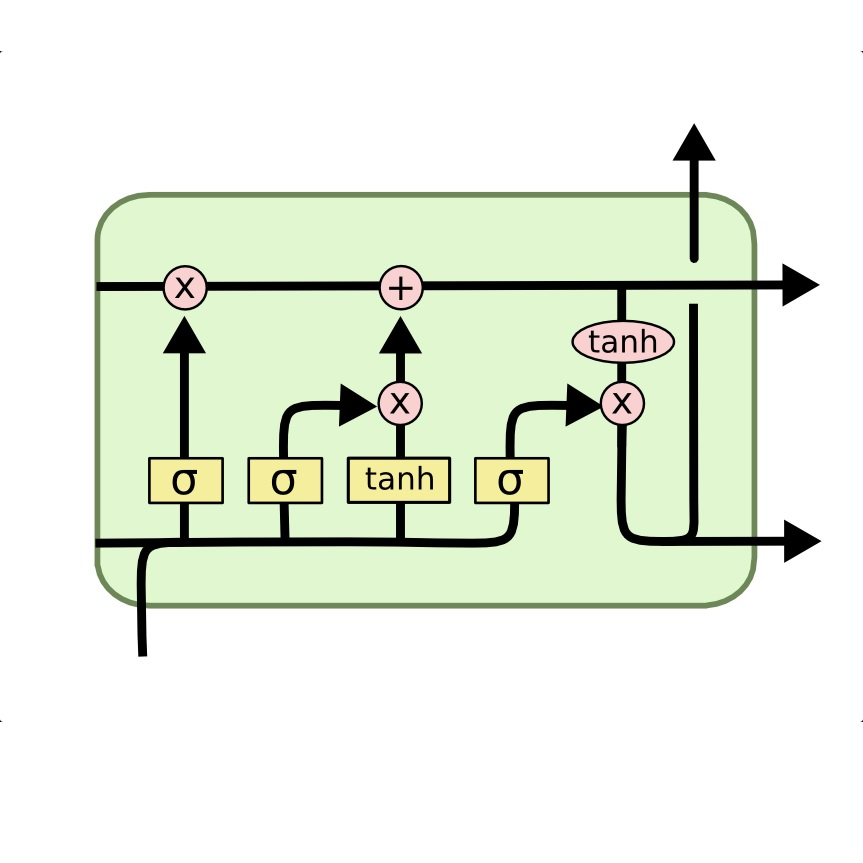
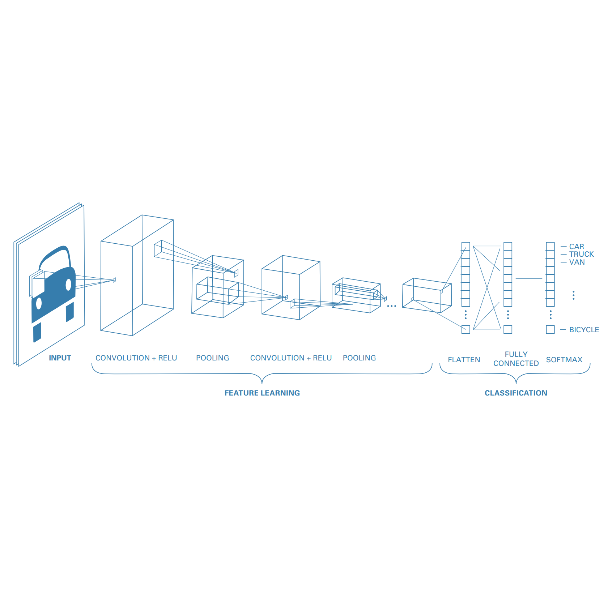

Projects
Implementations from the Neural Networks & Deep Learning course at the University of Tehran, each with code and a report. Research code lives with the papers on the home page and on GitHub.

NEURAL NETWORKS & DEEP LEARNING · DR. AHMAD KALHOR · AUTUMN 2022
Transformers, BERT and BEiT
- BERT: pre-training of deep bidirectional Transformers for language understanding
- BEiT: BERT pre-training of image Transformers

NEURAL NETWORKS & DEEP LEARNING · DR. AHMAD KALHOR · AUTUMN 2022
Generative adversarial networks: DCGAN, AC-GAN and WGAN
- Unsupervised representation learning with deep convolutional GANs
- Conditional image synthesis with auxiliary classifier GANs
- Wasserstein GAN (Arjovsky et al., 2017)

NEURAL NETWORKS & DEEP LEARNING · DR. AHMAD KALHOR · AUTUMN 2022
Transfer learning and YOLOv6
- Skin-cancer classification with VGG19 and transfer learning
- Single-stage object detection with YOLOv6 on a chess dataset

NEURAL NETWORKS & DEEP LEARNING · DR. AHMAD KALHOR · AUTUMN 2022
RNN, LSTM, GRU and CNN-LSTM
- Air-pollution prediction in a smart city
- Fake-news detection with a hybrid CNN-RNN

NEURAL NETWORKS & DEEP LEARNING · DR. AHMAD KALHOR · AUTUMN 2022
Convolutional neural networks
- Effects of varying resolution on CNN image classification
- CNN image classification on MNIST and Fashion-MNIST